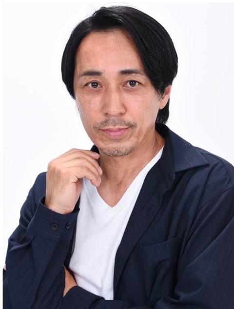
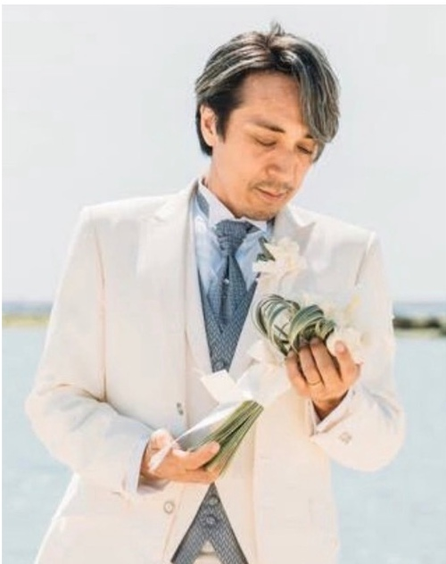
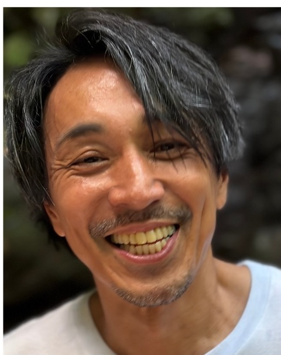
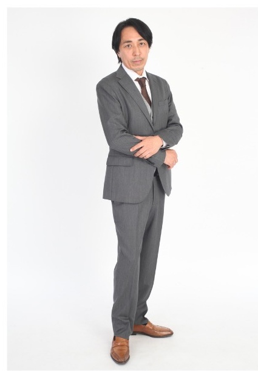

ACTOR / TALENT / MODEL
南城 瑛人
EIGHT NANJO

CLICK TO VIEWPROFILE
プロフィール
1974年7月20日生まれ。東京都出身。
俳優として、映画・ドラマ・舞台・バラエティなど
幅広く活動しています。
人との出会いや経験を大切にしながら、
これからもさまざまな役に挑戦していきたいと思っています。
どうぞよろしくお願いいたします。
Eight Nanjo

- 生年月日
- 1974年7月20日（52歳）
- 出身地
- 東京都
- 身長
- 177cm
- 体重
- 65kg
- サイズ
- B 92cm / W 83cm / H 90cm
- 靴
- 27cm
特技
即興で詩をかける / 小林幸法拳 / クロージング（2年連続成約率85%以上）
趣味
ギター / 絵 / 御朱印 / 城・仏閣巡り / 月1回の海外・国内旅行 / バイク・車 / 月2回の美容
資格
船舶1級 / 特殊船舶 / 普通免許 / 自動二輪AT / 大型特殊 / 小型建設機械 / 食品衛生責任者 / 防火管理者
WORKS
出演実績
ドラマ・映画
- Amazonプライム連続ドラマ「雫」（梶原亮平役）
- FOD（公開前）刑事・悪役社長
- YouTube「東京彼女」夫婦役
- 日テレ「俺たちの箱根駅伝」（カメラマン役・役員役）
- 映画「仮面ライダーガッチャード」（特殊医療班役）
- YouTube「エスドラ」（会社社長役）
- KTV「銀河の一票」（YouTuber役）
- 日テレ「タツキ先生は甘すぎる」（海岸ゴミ拾い監視役）
- ドラゴンクエストファンタジアビデオ（勇者役）
- VIVNT（闇市商人役）
- インフォーマー（刑事役）
- ドラマ「親愛なる夫へ」（カメラマン）
- 映画「地上げ屋」（会社役員役）
- NHK アンダークラス（刑事役）
CM
- はなまるき味噌（メイン子役）
- ナーフピンポン（メイン子役）
- 日テレ集英社（メイン子役）
- ヤクルト（研究員役）
- 三井住友銀行（VIP客役）
- マクドナルド（プレイヤーM）
- レイク（主演）
- 宝くじ（カップル役）
- キリンビール（会社社長）
- Google（記者役）
スチール
- 西友広告
- 映画「探偵はBARにいる」
- NHK「幸せは寝て待て」
- NHK「告解」
GALLERY
フォトギャラリー
写真をクリックすると大きく表示できます。


CONTACT
お問い合わせ
出演・キャスティング・お仕事に関するお問い合わせはこちらから。
お問い合わせ →